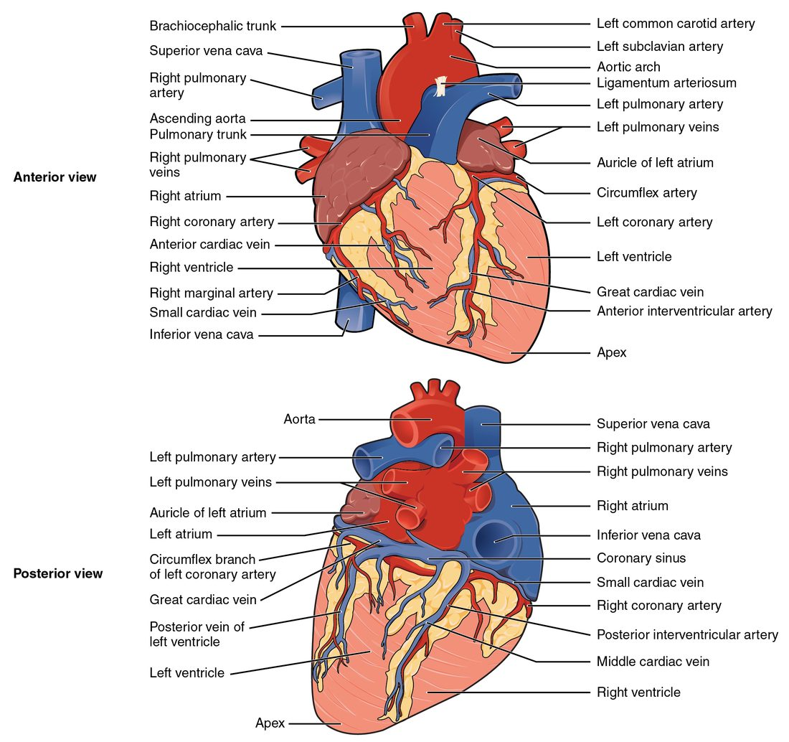
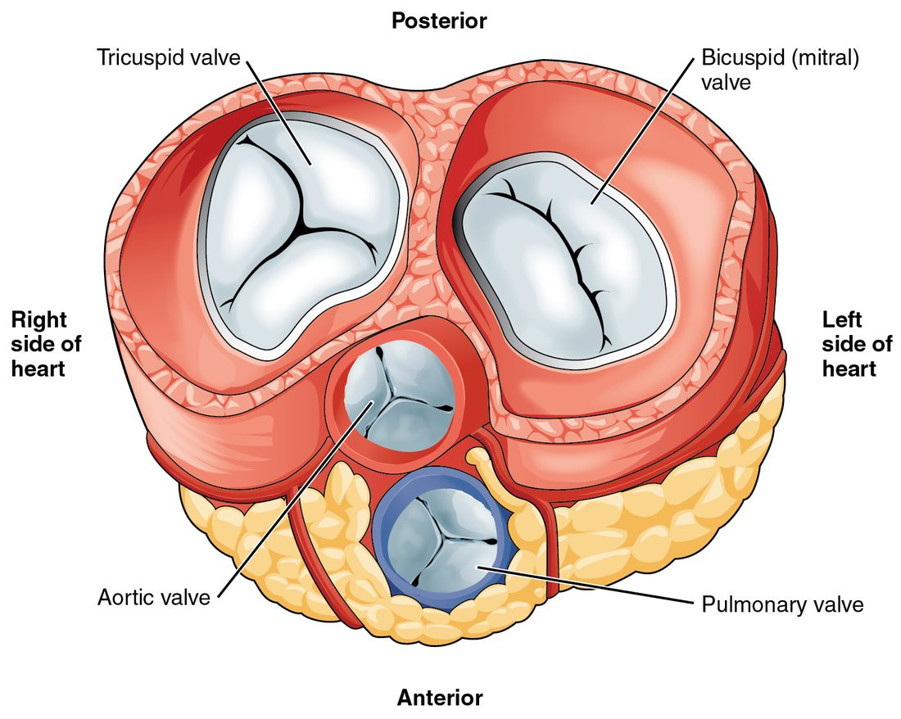

Your heart is two pumps built side by side, each with a receiving chamber on top and a pumping chamber below, and four one-way valves that keep blood moving forward. This page labels the heart chambers and valves, the walls between them, the large vessels attached to them, and the fibrous skeleton that holds it all together. The next topic follows blood through these parts in order.
Four chambers: two receiving, two pumping
Picture a house with two floors and a solid wall down the middle. Each side has an entry hall upstairs and a big room downstairs. Blood always comes in upstairs and leaves from downstairs. That is the layout of the four chambers of the heart.
- An atrium (atri- = entrance hall; plural atria) is an upper, receiving chamber. Veins deliver blood into it.
- A ventricle (ventricul- = little belly) is a lower, pumping chamber. It pushes blood out into an artery.
So you have a right atrium above a right ventricle, and a left atrium above a left ventricle. "Right" and "left" are always the patient's right and left. When you look at a front-view drawing, the patient's right side is on your left.
The right side and the left side never share blood inside a healthy adult heart. Each side is a separate pump. The right side pumps blood to the lungs; the left side pumps blood to the rest of the body.
What the chambers look like from outside
From the front (Figure 1), you mostly see the right ventricle, with the left ventricle forming the left edge and the apex. Each atrium has a wrinkled, ear-shaped pouch on its front called an auricle (auricul- = little ear). The auricles add a little extra room to each atrium.
Grooves on the surface show where the chambers meet inside. Each groove is filled with fat and carries the heart's own surface blood vessels.
- The coronary sulcus (coron- = crown; sulcus = groove) runs all the way around the heart like a crown. It marks the boundary between the atria above and the ventricles below.
- The anterior interventricular sulcus runs down the front of the heart toward the apex. It marks where the wall between the two ventricles meets the surface.
- The posterior interventricular sulcus does the same on the back of the heart.

What the chambers look like inside
Cut the heart open in a frontal plane (Figure 2) and the inner walls look different in each chamber.
- Pectinate muscles (pectin- = comb) are parallel ridges of muscle, like the teeth of a comb, on the inner wall of the auricles and the front wall of the right atrium. The rest of each atrium's wall is smooth.
- Trabeculae carneae (trabecula = little beam; carne- = flesh) are irregular ridges and bridges of muscle on the inner walls of both ventricles.

The walls between the chambers
A septum (plural septa; saept- = fence) is a dividing wall. The heart has three septa of the heart.
- The interatrial septum separates the right and left atria. It is thin.
- The interventricular septum separates the right and left ventricles. It is thick and mostly muscle, with a small, thin fibrous part near the top.
- The atrioventricular septum is the region between the atria and the ventricles. The openings from each atrium into its ventricle pass through it.
The fossa ovalis
On the right atrium's side of the interatrial septum you can see a shallow oval dip. This is the fossa ovalis (fossa = shallow pit, ovalis = oval). Its floor is thinner than the rest of the septum.
The great vessels
Five kinds of large vessel attach at the base of the heart: two venae cavae, the pulmonary trunk, the pulmonary veins (usually four) and the aorta. Together they are called the great vessels. Learn them by the chamber each one joins.
| Vessel | Chamber | Direction | Where the blood goes or comes from |
|---|---|---|---|
| Superior vena cava | Right atrium | Into the heart | From the head, neck, arms and upper chest |
| Inferior vena cava | Right atrium | Into the heart | From the abdomen, pelvis and legs |
| Pulmonary trunk | Right ventricle | Out of the heart | Splits into the right and left pulmonary arteries, one to each lung |
| Pulmonary veins (usually four) | Left atrium | Into the heart | From the lungs |
| Aorta | Left ventricle | Out of the heart | To every part of the body |
The superior vena cava (vena = vein, cava = hollow) and inferior vena cava are the two largest veins in your body. The pulmonary trunk (pulmon- = lung) is a short, wide artery that splits into the two pulmonary arteries. The pulmonary veins return blood from the lungs. The aorta is the largest artery in your body.
Notice the naming rule. An artery carries blood away from the heart, and a vein carries blood toward it. The name depends only on direction, not on what the blood carries. That is why the pulmonary arteries and the pulmonary veins can carry very different blood and still follow the rule. The next topic shows exactly how.
Two kinds of valves
A valve is a set of flaps, called cusps, that lets blood through in one direction only. Your heart has four. Two sit between each atrium and its ventricle. Two sit at the exits from the ventricles into the large arteries. Figure 3 shows all four from above.

Atrioventricular valves
The atrioventricular valves (AV valves) sit between each atrium and the ventricle below it.
- The tricuspid valve (tri- = three, cusp = point) is the right atrioventricular valve. It has three cusps and sits between the right atrium and the right ventricle.
- The mitral valve (also called the bicuspid valve) is the left atrioventricular valve. It has two cusps (bi- = two), and its shape reminded early anatomists of a bishop's hat, a miter. It sits between the left atrium and the left ventricle. This course calls it the mitral valve from here on.
The cusps of each AV valve hang down into the ventricle. Their edges are tied to the ventricle wall by thin, strong cords of collagen called chordae tendineae (chord- = string, tendin- = tendon), often called "heart strings." Each cord runs from a cusp to a papillary muscle (papilla = nipple), a cone of muscle that rises from the ventricle wall.
Here is how they work together. When the ventricle contracts, blood pushes the cusps upward and they meet, sealing the opening. As the ventricle contracts, the papillary muscles, which are part of the ventricle wall, contract too. They pull the chordae tendineae tight. Taut cords stop the cusps from flipping up into the atrium, the way the lines of a parachute stop it from turning inside out.
Semilunar valves
The semilunar valves (semi- = half, lun- = moon) guard the exits from the ventricles.
- The pulmonary valve sits between the right ventricle and the pulmonary trunk.
- The aortic valve sits between the left ventricle and the aorta.
Each has three cusps shaped like half-moon pockets. When blood flows out of the ventricle, it presses the pockets flat against the artery wall. When blood starts to slip back toward the ventricle, it fills the pockets, and the three pockets bulge together and seal the opening. They need no cords and no muscles.
All four valves move only because blood pushes on them. No muscle opens or closes a valve. A later topic on the timing of each heartbeat explains exactly when each valve opens and closes.
| Atrioventricular (AV) valves | Semilunar valves | |
|---|---|---|
| Names | Tricuspid (right) and mitral (left) | Pulmonary (right) and aortic (left) |
| Location | Between each atrium and its ventricle | Between each ventricle and its artery |
| Number of cusps | Three on the right, two on the left | Three each |
| Cusp shape | Flat flaps hanging into the ventricle | Half-moon pockets facing the artery |
| Held by cords and muscles? | Yes: chordae tendineae and papillary muscles | No |
| Stops blood flowing back into | The atrium | The ventricle |
Why the left ventricle wall is thicker
Look at the two ventricles in Figure 4. The left ventricle wall is about three times as thick as the right, and its cavity is round. The right ventricle is a thin crescent wrapped around it. Yet on average both ventricles pump out the same volume of blood with each beat. So why the difference?
The answer is the pressure each ventricle has to produce.
- The right ventricle pumps into the vessels of the lungs. They are short, wide and many, so they offer little resistance to flow. The right ventricle only has to push the pressure to about 25 mm Hg to move its blood.
- The left ventricle pumps into the vessels of the entire rest of the body. Together they offer much more resistance. To push the same volume of blood through them, the left ventricle has to raise the pressure to about 120 mm Hg, roughly five times higher.
- Heart muscle, like other muscle, grows thicker when it works against a heavier load for a long time. At birth the two ventricle walls are about equally thick. Over the first months of life, the left ventricle works against the higher pressure, and its wall thickens to match.
So the thick wall is not because blood travels farther or because the left ventricle moves more blood. It reflects the higher pressure the left ventricle works against, beat after beat. The atria have the thinnest walls of all, because they only have to raise the pressure a little to push blood into the relaxed ventricle right below them.
The cardiac skeleton
Between the atria and the ventricles lies a flat sheet of dense connective tissue called the cardiac skeleton (also called the fibrous skeleton of the heart). It is not bone. It is four rings of dense collagen, one around each valve, joined to each other and to the top of the interventricular septum.
It does three jobs, each following from its structure:
- It holds the valves open to the right size. The firm rings keep each valve opening from stretching as pressure rises, so the cusps still meet.
- It anchors the muscle. The muscle of the atria and of the ventricles attaches to it, giving the contracting muscle something firm to pull against.
- It insulates the atria from the ventricles electrically. Collagen does not conduct electrical signals the way muscle does. So the signal that makes the atria contract cannot spread directly into the ventricles. It can only cross at one specialized pathway, which you will meet three topics from now, when you follow the heart's electrical signal from chamber to chamber. This forces the atria to contract first and the ventricles a moment later.
Summary
Your heart has two atria on top that receive blood from veins and two ventricles below that pump blood into arteries. The auricles, pectinate muscles and trabeculae carneae are surface and wall features of these chambers, and the coronary and interventricular sulci mark their boundaries on the outside. Three septa divide the chambers; the fossa ovalis sits in the interatrial septum. The venae cavae enter the right atrium, the pulmonary trunk leaves the right ventricle, the pulmonary veins enter the left atrium, and the aorta leaves the left ventricle. The tricuspid and mitral valves, held by chordae tendineae and papillary muscles, stop backflow into the atria; the pulmonary and aortic semilunar valves stop backflow into the ventricles. The left ventricle wall is thicker because it works against about five times the pressure of the right. The cardiac skeleton anchors the valves and muscle and insulates the atria from the ventricles.